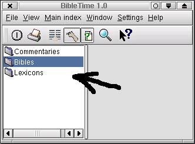
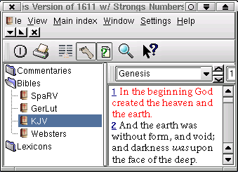

BibleTime is mainly operated from the Module Tree (this tree is called the "Groupmanager"). The second important place to work with BibleTime is the MDI area (MDI = Multiple Document Interface).
This is the pane on the left side of the BibleTime window. It contains the tree of installed modules, as well as any bookmarks you enter.

To do this, simply click on the desired category (Bibles, Commentaries, or Lexicons) to show the modules in it, then click on the desired module. To open another instance of the same module, right-click on the mouse and choose, "New Presenter".

Another way is from an already opened module. Simply click on the verse number (pointer changes to hand) and drag it to the module list. Drop it on the name of the module you want to open, and it will open that module to the verse you dragged over. If you drag a verse number to an already open module, it will automatically jump that module to the verse dragged over. This works for Bibles and Commentaries only.
There are two other less-used functions accessible through right-clicking on the module name. "Show info" opens a window with information about copyright and other pertinent things about the selected module. "Set unlock key" opens a small dialog for encrypted (copyrighed) modules. This allows those with the key to enter it to decrypt the module and make it human-readable.

You can search in a module by right-clicking on the module name in the module list and selecting "Search in module(s)". By shift-clicking on other module names you can select more than one. Then follow the same procedure to open the search dialog. You will be searching in all of these modules.

Right-click on an empty part of the module tree window and select "Create new group" to create a new bookmark folder. You can use normal drag 'n' drop functions to drag verse numbers to create the actual bookmarks under the folder, and to rearrange bookmarks between folders. There is an import/export function for bookmarks also. From the right-mouse-button menu, select "Export bookmarks". This will bring up a dialog box for you to save the bookmark collection. They can be shared with other BibleTime users, archived, etc. They can be imported in the same way. You can also right-click to change folder names and bookmark descriptions (to be implemented later), and delete folders and bookmarks.